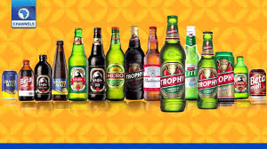
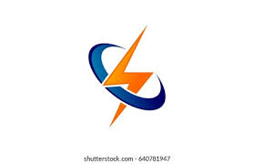

June 05, 2021
In this project, Analyzing data with SQL Queries from the international breweries data recorded for a duration of three years. Analyze the following analyses to aid better decision making to maximize profit and reduce loss to the lowest minimum.
1. Country that generated the highest profit in 2019
2. Find the year with the highest profit.
3. Which month in the three years was the least profit generated?
4. What was the minimum profit in the month of December 2018?
5. Compare the profit in percentage for each of the month in 2019
6. Which brand generated the highest profit in Senegal?
7. Country with the highest consumption of beer.
8. Highest sales personnel of Budweiser in Senegal
9. Country with the highest profit of the fourth quarter in 2019
.

December 08, 2021
ARKVIEW ELECTRICITY ENERGY CONSUMPTION DASHBOARD WITH POWER BI

Enery consumption dashboard for ArkView Electricity Distribution Company.A energy distribution that provide quality of life for all customers and stakeholders by utilising cutting-edge technology and innovative processes, to sustainably, reliably and safely supply electricity
A loan disbursement can be negative or positive. A positive disbursement will result in a credit to an account whereas a negative disbursement results in an account debit.
Below are the insights drive from the project
1. Disbursement Per Loan Officer: The visualization show the sum of loans disbursed per loan officer, per branch for 6 years (2014 to 2020).
2. Disbursement per Product category.
3. Total interest paid: The visualization show the total amount interest paid per product for 6 years. The slicer can be use to see the breakdown by loan status product and Loan sub status product.
4. Portfolio At Risk: The visualization show the outstanding amount of all loans that have one or more instalment of principal interest, etc. So i considered all loans that is greater than 30 days overdue.
5. Overdue of last month:
i. Last month disbursement Amount by overdue days
ii. Last month loans by loan officer
iii. PAR (Portfolio At Risk) 30% by loan status.
iv. Total Amount outstanding 30 days more.
.
The National Primary Healthcare Development Agency (NPHCDA), has vaccinated 5,770,899 (approximately 6Million) eligible persons with the first dose of the COVID-19 vaccination ( both AstraZeneca and Moderna) while 3,146,885 have taken the second dose (fully vaccinated).
In this analysis, I was able to get some of the following insight and more:
1. Compared total population and doses administered so far; this shows that only 6M Nigerian got vaccinated from 195M total population.
2. Total doses administered by regions and also by state; I was able to visualize the total number of Nigerian got vaccinated in each region with states in a each regions.
3. Total Moderna and AstraZeneca doses administered by regions in the country.
4. % of doses administered by Moderna and AstraZeneca.
In Conclusion, Nigeria targets 70% population 2022 to be vaccinated.

This holds all of my Tableau Dashboard such as 1. Pie Bakery Dashboard, 2. Sales Dashboard, 3. XYZ Retails Store Sales Report, 4. World Bank Co2 Emission Report.